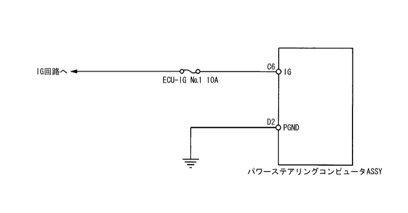
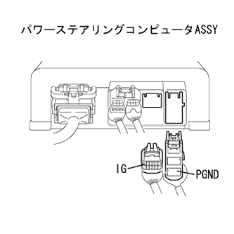

DTC C1551/25 IG Power Source Voltage Malfunction |
| DTC No | Detection Item | Inspection Area |
|---|---|---|
| C1551/25 | Open or short in IG power source circuit |
|

)| Step 1 | Inspect Fuse (ECU-IG No.1 10A) |
Using the SST (Toyota electrical tester), measure the resistance of the fuse (ECU-IG No.1 10A).
| Tester Connection | Condition | Standard |
|---|---|---|
| ECU-IG No.1 Fuse | Always | Below 1 Ω |
|
| ||||
| OK | |
| Step 2 | Inspect Wire Harness and Connector (IG Power Source and Ground) |
 |
Disconnect connectors C and D of the power steering computer assembly.
Using SST (Toyota electrical tester), measure the voltage and resistance between the wire harness side connector of the power steering computer assembly and body ground.
| Tester Connection | Condition | Standard |
|---|---|---|
| C6 (IG) - Body ground | IG ON | 11 to 14V |
| Tester Connection | Condition | Standard |
|---|---|---|
| D2 (PGND) - Body ground | Always | Below 1 Ω |
|
| ||||
| OK | ||
| ||